Ольхон
- 21-24 августа 2008 -
[ 1 ] - [ 2 ] - [ 3 ]
Часть 1. Приезд, база на Тутырхее, прогулка на мыс
Хорин-Ирги.
Маринка!
В последнее время эта девушка все чаще принимает участие в разных авантюрках
:)
Поехала в первый раз на Ольхон. Ну это еще ладно, я и сам на Ольхон
впервые еду. Но Маринка еще и первый раз на ВЕЛОСИПЕДЕ !
Это если не считать небольшого опыта катания по городу : "Блин,
я уже запарилась эту дуру везде таскать, в электричку, в дома!".
Да, это не ролики :)
21 августа. 8 утра. Автовокзал. До Сахюртэ (МРС) на маршрутке
можно доехать за 300 рэ. За рукзак на верхнем багажнике водила берет
100 рэ, за велосипед там же - 200 рэ. Ну а больше никак, своим ходом
педали крутить - ноги коротки. Загружаемся неспеша, и в 10-м часу стартуем
прочь из города. Где-то в городской пыли остались глупые проблемы и
страхи, но их скоро смоет дождь. Сюрприз-кулинария от Марины существенно
ускоряет дорогу :)
РАЗ - весело поговорили, ДВА - поспали, ТРИ - уже на пароме! Теперь
нам надо по карте и по джипиэсу найти базу Ивана Шульца, на которой
нас ждет Лёха Пестов. Это оказалось не трудно, не даром я накануне координаты
в новомодную штукуёвину забивал и карты распечатывал, да и Лёха нам
навстречу на велосипеде выехал :)
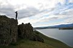
. 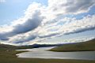
Бухта Загли и озеро Нурское
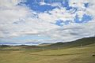
Главная дорога Ольхона
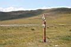
Сэргэ (коновязь)
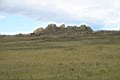
Скалы, очень похожи на старинный замок
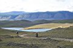
. 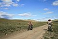
. 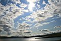
. 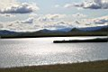
По объездной дороге мимо бухты Хул
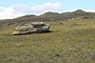
"А это - подбитый курыканский танк!"
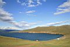
База расположена на заливе Иркутская Губа.
Возле берега баня, юрта, палатки.
Бревенчатые дома повыше, там же еще одна юрта
и еще палатки.
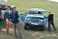
На базе все под впечатлением от свежеперевернувшегося УАЗика.
Жертв и серьезных травм нет. Помятая крыша, а на ней, на багажнике,
был СЁРФ!
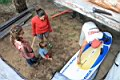
Осмотр сёрфа - повреждения все-таки есть :(
Хождение под парусом отменяется.
Возможность ремонта под вопросом...
. 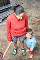
Толян - ольхонский Маугли.
Принципиально не носит сандали.
Спит в палатке, в нескольких метрах от Байкала.
Достает всех вопросом "Где папа?"
(Не волнуйтесь, родители у него есть. Лёха и Соня Пестовы :)
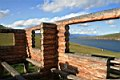
Прогрессирующая часть базы
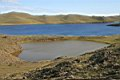
Нуку-Нур. Озеро Сердце.

Два катера отдыхают в бухте Хул
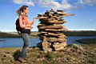
. 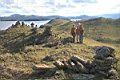
. 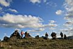
. 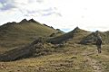
. 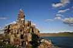
Вечером я, Марина и семейство Пестовых прогуливаемся по спине
легендарного окаменевшего чудища (похоже, что это гигантский дракон).
С одной стороны полуострова - бухта Хул, с другой - Малое Море.
Очень много туров (каменных башенок).
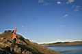
Насобирали пушистых перьев чаек
и пускали их по ветру
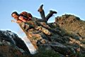
. 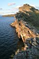
. 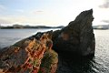
Мыс Хорин-Ирги, по-бурятски - Кобылья Голова.
На саму Голову не полезли. Это такой небольшой островок рядом с мысом.
До него пролив несколько метров, вброд можно пройти, но холодно.
А скалы на мысе просто взяли и наклонились в сторону Малого Моря,
очень впечатляет смотреть с таких обрывов вниз, на волны.
. 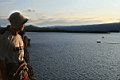
. 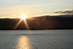
.
.
Байкал, я, Маринка, закат Солнца и перья чаек
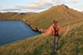
Призрачная птица-скво
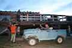
. 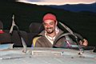
"А я сяду в кабриолет, и уеду куда-нибудь ..."
УАЗику сорвало крышу :)
Очень клевый лого-Типчик-с-бубном
Поздним вечером на базе была гулянка, кажется провожали
москвичей. А мы скромно сидели и ждали, когда Лёха закончит с делами,
а потом тоже разлили бутылочку "Амриты" и выпили за фрирайдеров :) Тут
на базе еще Олег (Волосатый) и Олег Олегович гостят, они по Ольхону
на Ниве катаются, отдыхают от своей турбазы.
Ближе к 12-ти, с последним паромом, приехала Света Снегурочка. Ездили
с Олегом ее встречать, показывали дорогу от трассы, а то тут ночью по
объездным дорогам можно уехать в никуда.
Ночевали в настоящей бурятской юрте, на берегу Байкала. Эх, хорошо под
шум волн засыпать!
Продолжение читайте здесь . .
.
Лёха Слюдянский.
Фото: Август 2008.
Текст: Сентябрь 2008.